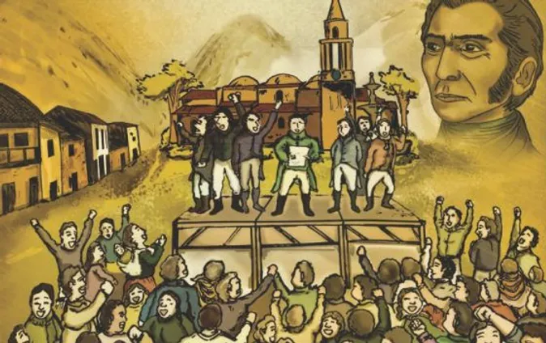
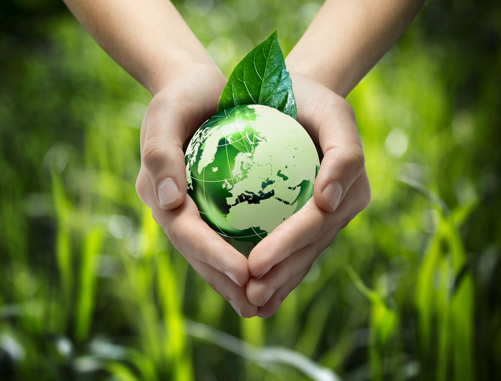
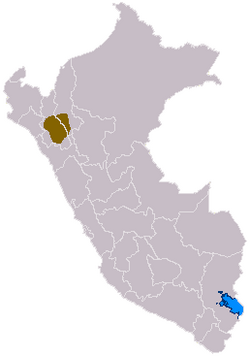
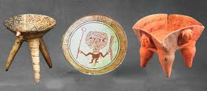
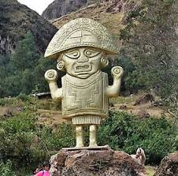
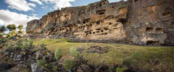

Fundación
La fundación de Cajamrca fue un 6 de enero de 1821, es de cir, tuvo una independencia más temprana que Nuestra capital Lima.Cajamrca se independizo por Don José de San Martín, llamandose en un principio San antonio de Cajamarca, pero en 1865 se cambio a como lo conocemos hoy:Cajamarca
 |
Culturas que habitarón
A los largo de la historia, Cajamrca ha sido un lugar relevante,pues fue territorio de varios imperios, como los chimú,incas,cavín,etc.Pero una de las Culturas que fue más relevante, y se asento en su totalidad en cajamarca, fue la Cultura Cajamrca.
 |
Ubicación
la cultura cajamarca tiene su territorio en la parte sur de cajamarca y la parte sur de amazonas. Respecto a lima igualmente se sigue ubicando al norte de este. Alrededor de este territorio, sin contar las provincias donde se ubica, la cultura cajamarca limite con San martín, la libertad y Lambayeque.
 |
Sociedad
La cultura cajamarca estaba dividida en 4 clases sociales, la primera, los nobles, quien es liderada por un curaca, que básicamente es como un rey de todos. Después se encuentran Los sacerdotes quienes eran importantes para rituales religiosos a sus divinidades. Después se encuentra la clase guerrera, donde se encontraban todos los militares y personas que conquistaban y defendían territorio, finalmente se encuentran los campesinos, que son los que proveen recursos y alimentos a todo el puebloEn sus actividades económicas estos, como todas las demás culturas, se centraban en la agricultura y ganadería. Para obtener alimentos y recursos. También, estos también obtendrían economía por el comercio, al tener habilidades en sus cerámicas y textiles.
 |
Divinidaes
No se conoce mucha información acerca de las divinidades de la cultura cajamarca, pero, estos tenían como dioses principalmente al dios wiracocha creador del mundo y a la pachamama, madre tierra
 |
Aportes culturales
la cultura cajamarca ha dejado grandes aportes para el Perú para mantener su patrimonio cultural algunos aportes son.la arquitectura de la cultura cajamarca tuvo un notable desarrollo a diferencia de las demás,pues usaban piedras pulidas, juntandolas sin ayuda del mortero, teniendo grandes construcciones y plazas ceremoniales.Los petroglifos y pinturas rupestres encontrados en la región de Cajamarca son testimonios importantes de la creatividad artística de esta cultura. Estas representaciones en las rocas proporcionan información invaluable sobre su cosmovisión, creencias religiosas y actividades cotidianas.
 |